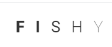

|  | |
|
Аква́риумные рыбы — собирательное название таксономически разнородных рыб, которых содержат и разводят в аквариумах с декоративной целью. Первые упоминания об искусственном разведении рыб в Китае датированы 1500 годом до н. э. Для большей части аквариумных рыб характерны яркая декоративная окраска, причудливые формы тела и небольшие размеры. Самыми популярными аквариумными рыбами считаются золотые рыбки! |
К популярным аквариумным рыбкам относятся также: данио, ансциструсы, барбусы, скалярии, сомики, неоны, нанностомусы, лабео, дискусы, гуппи и др. Посмотрите на наш ассортимент и выберите подходящих вам рыбок! |
| Ассортимент | |
|
Неон | 70.00 руб |
|---|---|---|
|
Скалярия | 70.00 руб |
|
Данио | 80.00 руб |
|
Тернеция ГМО | 120.00 руб |
|
Барбус зеленый | 120.00 руб |
|
Барбус красный | 150.00 руб |
|
Гуппи | 70.00 руб |
|
Золотая рыбка | 250.00 руб |
|
Меченосец | 00.00 руб |